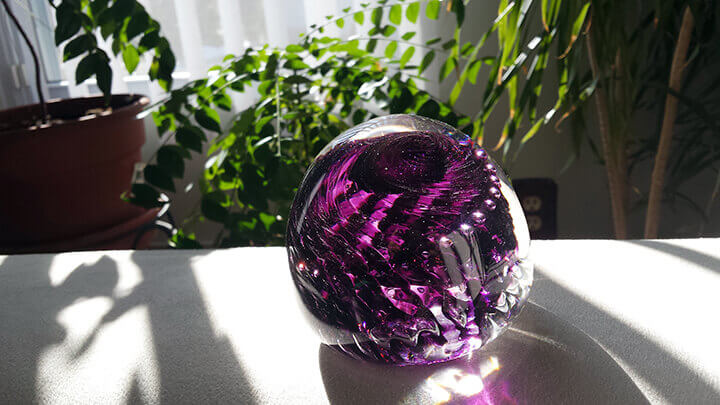
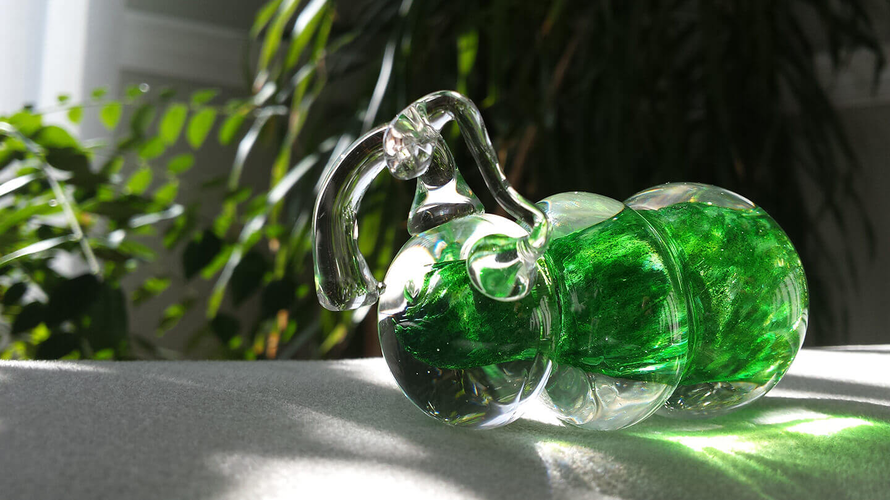
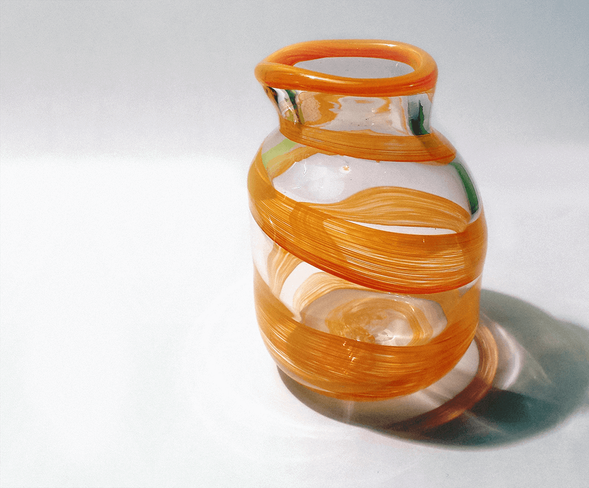
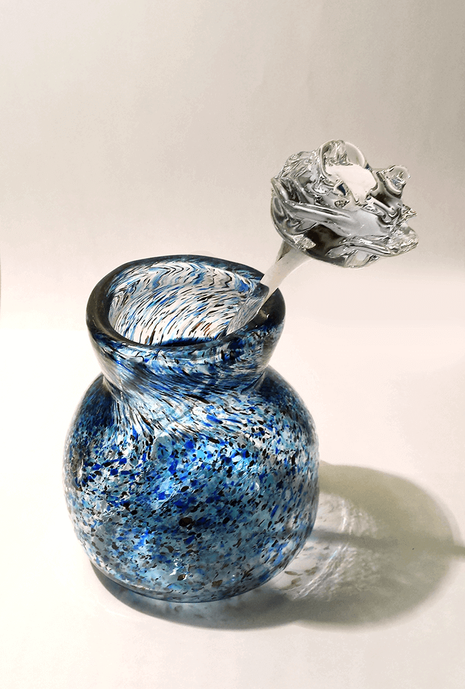
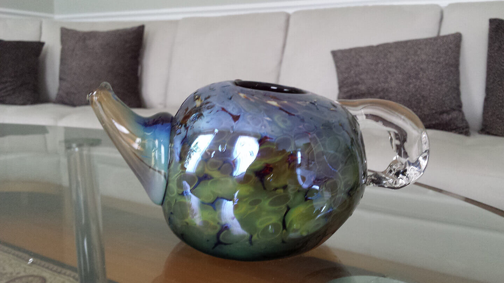
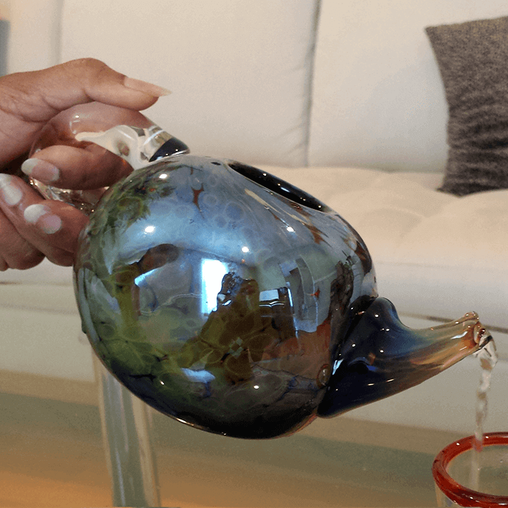

Each of these works featured experimental methods in glassblowing and were motivated by different techniques.
My approach to glassblowing is heavily shaped by my understanding of its chemistry - colored glass is often volatile because the color changes the glass’ ability to retain heat during glasswork. Understanding glass’ heat distribution is essential to control it best in its molten state.
The first sculpture (to the right) was made by forming a colored glass sphere, shaping it in a mold, wrapping it in a string of controlled bubbles and surrounding the piece in another ball of glass.
The caterpillar, to the right, was created by surrounding a colored glass section in a ball of molten glass, shaping it into three sections and attaching external antenna to its anterior end.
Caterpillar
6” x 2” x 3”
Glass
2014
This pitcher was formed by first creating the form of a cup and then shaping its interior to be more bulbous and its lip to open to a subtle spout. This pitcher is particularly interesting because it has a lip wrap and a gradient wrap applied to its exterior - while the cup is being made, a strip of colored glass is applied by rotating the cup and making contact with the colored glass. With pressure, the wrap merges into the clear glass to remove any textural artifacts.

Spouted Pitcher
3” x 3” x 6”
Glass
2015
Finally, to the right, is a glass rose in a speckled vase. The speckled vase here is made by again, creating the form of a cup, and shaping its lip to open outwards. The speckles come from a loosely applied color mix with many colors.
The rose was made in under 3 minutes, by collecting hot glass, shaping petals and pulling the form of the rose outwards to create a stem before the glass cools. The goal is to complete the rose without needing to apply any heat - applying heat could melt the petals and make the stem warp out of shape quickly, causing a lot of instability.

Speckled Vase, 3” x 3” x 5”,Glass, 2015
Rose, 8", Glass, 2014
This project showcases a few difficult techniques in glassblowing, and its process was heavily informed by my understanding of glass’ chemical properties and heat distribution. When you work with glass, the key is to preserve heat throughout the glass, and to keep the heat distributed to accomodate the project you are working on. Glass further away from the puntee cools faster, and because the puntee itself absorbs heat, it is important to heat that connection too.
Since this teapot was pretty large and heavy, applying heat was difficult becauase the molten glass would sag on itself and collapse. Because it was large, the piece cooled down quickly as well, so I approached finding the right heat like a science. The metallic peacock color was made by applying a flame to the exterior of the teapot. Because its color is metal-based, the torch initiates a reduction reaction, creating a metallic exterior. It also features a fully functional gradient spout and handle.
 Teapot
9” x 5” x 5”
Reduced Glass
2015
These pieces were a study in pitchers, with iterative adjustments to the spout size, handle size, form and scale. The largest pitcher weighs over 10 lbs - larger pieces are often difficult to work with because they tend to collapse on themselves and retain heat for shorter periods of time.
Pitchers from left to right
4” x 2.5” x 11”, Glass, 2016
6” x 6” x 13”, Glass , 2016
4.5” x 4.5” x 7”, Glass , 2016
3” x 3” x 3”, Glass , 2016